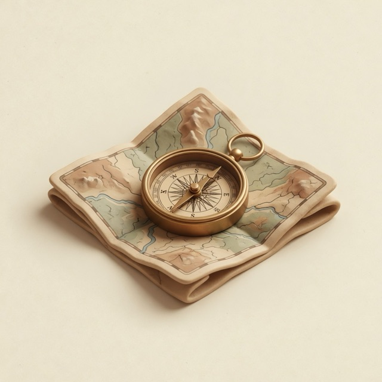

✓ Saved to bookmarker

Sort your borks
The same ten saves, unfiled, through the real deck. Your filings teach it as you go.
Saved in one tap. Filed in one more.

The same ten saves, unfiled, through the real deck. Your filings teach it as you go.